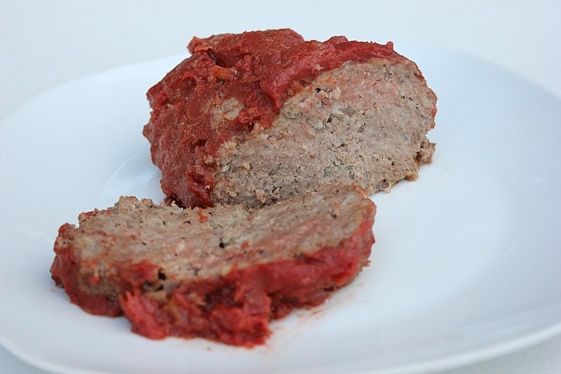

Recipe for Meatloaf
Serve this easy meatloaf made with pork, prosciutto and parmesan hot or cold.
Ingredients
- 2 slices fresh white bread, crusts removed
- 500g pack minced pork
- 1 onion, roughly chopped
- 1 garlic clove, roughly chopped
- big handful of parsley
- 1 tbsp fresh chopped oregano or 1 tsp dried
- 4 tbsp freshly grated parmesan
- 1 egg, beaten
- 8 slices prosciutto
Method
- Heat the oven to 190C/fan 170C/gas 5.
- Put bread in processor and blitz to make crumbs, then tip into a bowl with the pork.
- Tip the onion, garlic and herbs into the food processor and process until finely chopped. Add to the bowl with the parmesan and egg.
- Finely chop 2 slices of the prosciutto and add to the mix with some salt and pepper. Mix well with a fork or your hands.
- Use the rest of the prosciutto to line a 1.5 litre loaf tin. Spoon in the meatloaf mix and press down well. Flip the overhanging prosciutto over the top, then put the loaf tin into a roasting tray.
- Pour hot water from the kettle into the roasting tray to come halfway up the loaf tin and bake for 1 hr until loaf shrinks from the sides of tin.
- Cool in the tin for 10 mins, then drain off any excess liquid and turn out onto a board. Cut into thick slices and serve warm or cold.